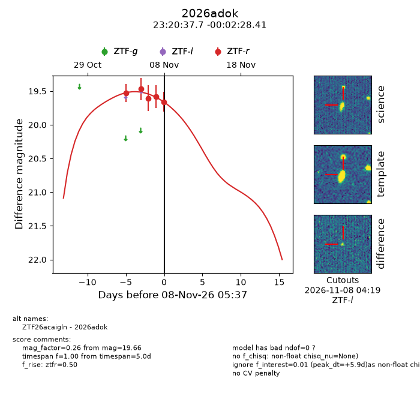
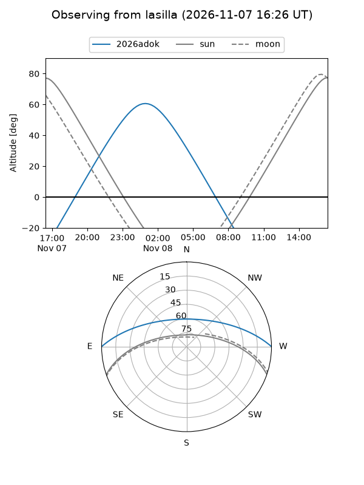
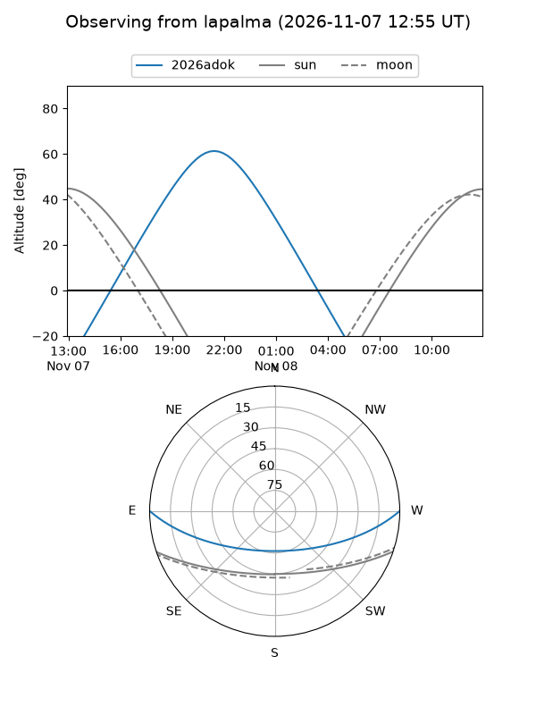
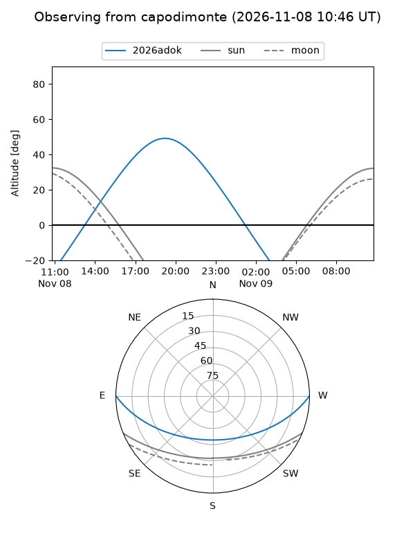
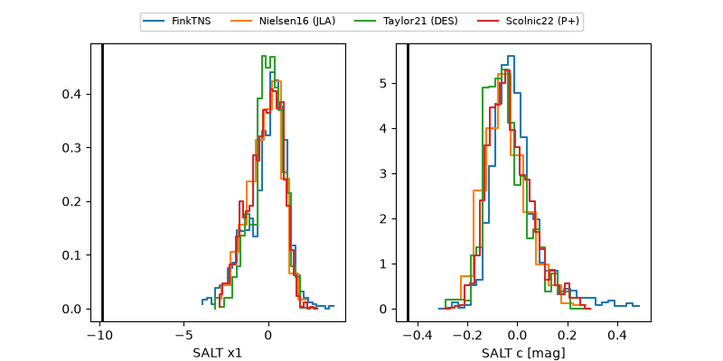

2026adok
Target 2026adok at 2026-11-08 05:39
Aliases and brokers:
FINK-ZTF: ztf.fink-portal.org/ZTF26acaigln
Lasair-ZTF: lasair-ztf.lsst.ac.uk/objects/ZTF26acaigln
ALeRCE-ZTF: alerce.online/object/ZTF26acaigln
YSE-PZ: ziggy.ucolick.org/yse/transient_detail/2026adok
TNS name: wis-tns.org/object/2026adok
Direct TNS query: direct search
alt names
ZTF26acaigln (ztf,fink_ztf)
2026adok (tns,yse)
Coordinates:
equatorial (ra, dec) = 350.1569,-0.04122
equatorial (HMS+DMS) = 23:20:37.66,-00:02:28.41
galactic (l, b) = (80.3523,-55.22121)
Flags:
peak dt: +5.9
Photometry:
last ztfr=19.66
5 ztfr detections
Lightcurve

Visibility



Additional plots
